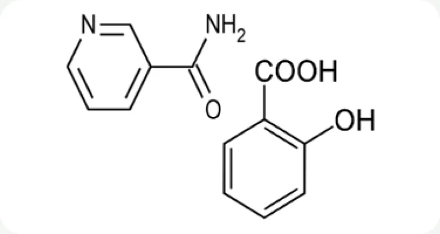
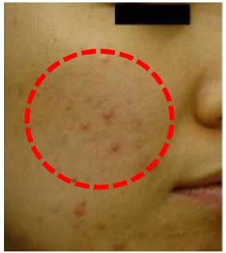
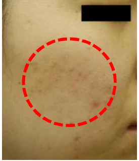
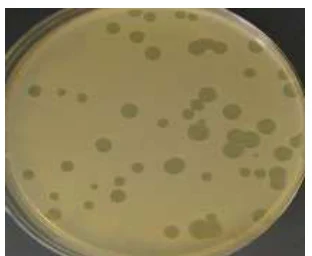
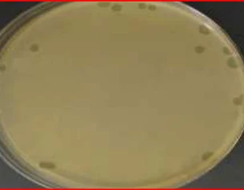
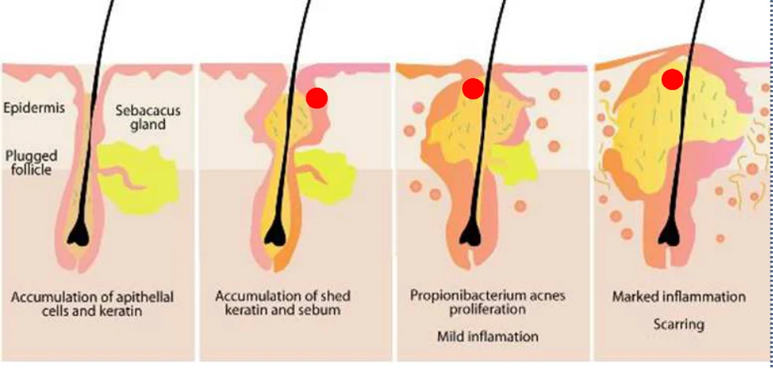

HOME
HOME- 원료소개
- 화장품원료
- MC-Salicare
Ingredient research
MC-Salicare
살리실산의 용해도를 높인 복합 원료
01 / Overview & Strengths
개요 & 특장점
MC-Salicare는 여드름 등에 효과가 있는 살리실산과 미백 원료인 나이아신아마이드로 구성되어 있습니다. 안전하고 효과적인 여드름 완화제이며, 수용성 저중합체 콤플렉스 제조기술을 적용하여 살리실산을 고농도로 물에 녹일 수 있게 만든 혁신적인 제품입니다. 기존 시중에 있는 살리실산 제품들 보다 개선된 용해도를 지닌 제품입니다.
※ 자세한 자료는 직접 문의 부탁드립니다.
Product features / Product Strengths
- 미백 효과
- 항염 효과
- 여드름개선 효과

02 / Technical Information
기술 자료
Product Name : MC-Salicare
원료 기본 규격 및 제품 카탈로그
- INCI Name
- Salicylic Acid, Niacinamide, Dextrin
- CAS No.
- 69-72-7 98-92-0 9004-53-9
- M.O.Q.
- 1KG
- Pack Size
- 1/10/20KG
- Appearance
- Powder
- Dosage
- Max 1%
※ 운영 사이트의 공개 정보를 반영했습니다. 자세한 자료는 직접 문의 부탁드립니다.
03 / Research Data
기타 데이터
- 여드름 완화 · 항염
살리실산과 나이아신아마이드는 화장품에서 주로 여드름 완화와 항염 효과를 냅니다.
- 각질 제거 복합체
각질 제거 기능이 있는 살리실산과 나이아신아마이드를 함께 담았습니다.
- 재결정 없는 수용성
수용성 올리고머 복합체를 적용해, 살리실산으로 다시 결정화되지 않고 물에 녹습니다.
- 안전한 여드름 케어
MC-SaliCare는 안전하고 효과적인 여드름 완화 원료입니다.


지원자가 MC-SaliCare 세럼을 2주간 하루 2회 여드름 부위에 바른 결과 병변이 줄었으며, 시험 기간 중 자극은 없었습니다.


여드름 지원자에게서 채취한 Propionibacterium acnes에 4% MC-SaliCare를 처리한 결과, 24시간 안에 세균 억제를 확인했습니다. (RCM 배지)
Properties특장점
- 자극 없는 강력한 여드름 완화
- 피지 생성 감소 효과 향상
- 염증 감소 효과 향상
- 색소 침착 감소 효과 향상
- 살리실산 용해도 개선

Mechanism
여드름 진행 단계별 작용
각질 · 피지 축적부터 여드름균 증식, 염증까지 여드름이 진행되는 단계마다 작용합니다.
- 피지 생성 감소
- 색소 침착 감소
- 피지선 관의 과각화 감소
- 세균 수 감소
- 염증 감소
원료 품질 시험 항목 및 기준
- Appearance
- White to pale yellow powder
- Odor
- Characteristic odor
- pH (*4→100)
- 4.0 ~ 6.0 (*Dilution rate)
- Content of Salicylic Acid
- 46.0 ~ 54.0% (w/w)
- Loss on drying
- Max. 10.0%
- Heavy metals
- Max. 20 ppm
- Arsenic
- Max. 2 ppm
- Microbial count
- <100 cfu/g
※ 출처: MacroCare Onepage Catalogue · Exfoliation complex (MC-SaliCare). 그래프 · 사진은 원문 자료를 사용했습니다. 상세 시험 조건은 별도 문의해 주세요.